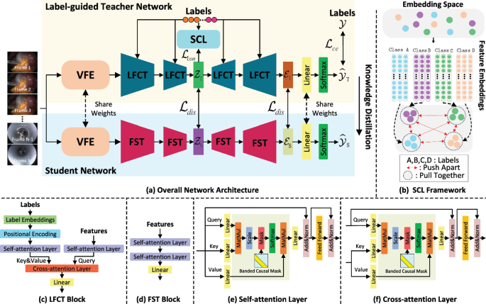
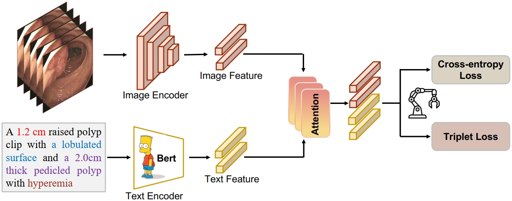

Research interests: Surgical Vision, Medical Image Analysis, Computer Vision, AI4Science Hi, I'm Jiale Guan, a 'Zero-Year' MS student at School of Biomedical Engineering, Shanghai Jiaotong University, advised by Prof. Guoyan Zheng. My research interests lie in Surgical Vision, Medical Image Analysis, Computer Vision and AI4Science. My research goal is to promote intelligent medical care by improving the visual understanding of medical devices, which can ultimately help build a healthy society. |
|  |
|
|  |
|
LongMeda Medical Excellence Scholarship, 2023
Class C Scholarship of Shanghai Jiao Tong University, 2022